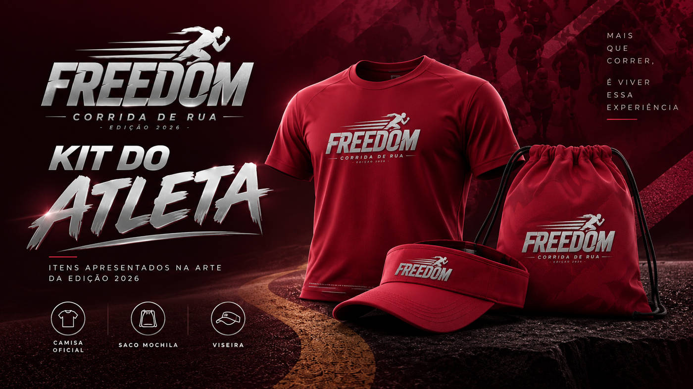

CAMISETA FREEDOM
A peça com a identidade visual da corrida, em tom vinho e marca prateada, como apresentada na arte de divulgação.
Os elementos da identidade Freedom ganham vida em uma coleção feita para marcar a experiência da edição 2026.

Imagem ilustrativa do kit Freedom 2026. A composição e os itens entregues por categoria devem ser confirmados com a organização.
Conheça os itens apresentados na comunicação visual da Freedom.
A peça com a identidade visual da corrida, em tom vinho e marca prateada, como apresentada na arte de divulgação.
Bolsa esportiva com cordão, representada com a mesma identidade visual da edição.
A viseira personalizada completa a composição mostrada nos materiais de apresentação.
Conforme as informações publicadas para a edição 2026, a retirada do kit está prevista para 14 de novembro, das 15h às 20h30, na secretaria da Igreja Presbiteriana de Carandaí, ou no dia da prova com uma hora de antecedência.
Leve documento com foto e consulte o regulamento para condições de retirada por terceiros e categorias específicas.
15h às 20h30
Confira o regulamento, as modalidades e as condições atualizadas na plataforma oficial.
ACESSAR INSCRIÇÃO OFICIAL ↗